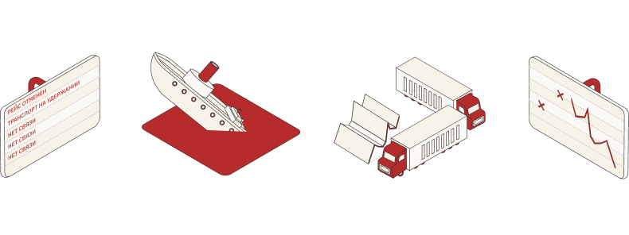

Система мониторинга транспорта

Контролируйте маршрут движения транспорта и его местоположение с помощью системы ГЛОНАСС/GPS-мониторинга, чтобы оптимизировать транспортную сеть и снизить издержки на ее обслуживание.
Вместе с системой контроля топлива мониторинг транспорта помогает сократить расходы на управление техникой, подобрать оптимальные режимы эксплуатации потребителей и вовремя реагировать на изменения в процессе движения.
Система подходит для:
Данные для отслеживания отображаются онлайн на удобном устройстве: планшете, смартфоне, ПК или ноутбуке.
Какие параметры можно отслеживать с помощью системы мониторинга транспорта?
Для отображения показателей можно выбрать удобный формат: карта, трек-график, график или таблица. На карте отражается положение каждого объекта мониторинга и его текущее состояние, в таблицах — сводные данные об использовании транспортного средства в связке с системой контроля расхода топлива.
Какие проблемы при отслеживании маршрута транспортного средства существуют?
Как система ГЛОНАСС/GPS помогает решить эти проблемы?
Без GPS-модуля нельзя сформировать адекватную систему мониторинга и управления расходом топлива. Только на взаимосвязи двух блоков можно построить качественное управление транспортом и сократить издержки на его содержание.
Благодаря системе ГЛОНАСС/GPS флот или парк транспортных средств можно превратить в единую локальную сеть, управлять которой удобно даже из дома. Информация обо всех судах, грузовых авто или буровых установках объединена в одном программном продукте и доступна для анализа. Сравнивайте показатели за день, месяц или год, следите за передвижением транспортных средств и моментально реагируйте на любые изменения.
Как система мониторинга поможет сократить расходы на обслуживание транспорта?
GPS-отслеживание в комплексе с системой контроля расхода топлива решает задачи по управлению техникой. Применив его, вы будете видеть в режиме реального времени, как двигается транспорт, в каких местах он находится более длительный срок, на каких узлах расходуется слишком много топлива и добросовестно ли персонал выполняет свои обязанности.
На основе полученных данных можно изменять особенности работы парка транспорта:
Пользуясь мониторингом и системой контроля топлива, наши клиенты снизили расходы до 25% ежемесячно.
3-6 месяцев — столько понадобится времени, чтобы окупить оборудование.
Внедрить систему мониторинга можно уже сейчас с помощью программы рассрочки от компании «Технодар».